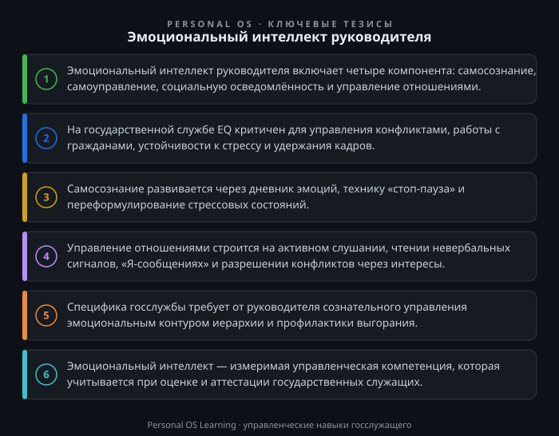

В современной системе государственного управления всё чаще звучит тезис о том, что эффективность руководителя определяется не только его профессиональными знаниями и опытом, но и способностью понимать эмоции — свои и окружающих. Управленческая деятельность на государственной службе связана с высокой эмоциональной нагрузкой: жёсткие сроки, регламентированные процедуры, работа с обращениями граждан, необходимость принимать решения в условиях неопределённости. В такой среде эмоциональный интеллект (EQ) становится не «мягким навыком», а базовой управленческой компетенцией, от которой напрямую зависит качество работы органа власти.
Руководитель, пренебрегающий эмоциональной составляющей, рискует столкнуться с целым спектром проблем: текучесть кадров, конфликты в коллективе, выгорание сотрудников, падение доверия со стороны граждан. Напротив, развитый эмоциональный интеллект позволяет выстраивать продуктивные отношения, сохранять работоспособность в кризисных ситуациях и создавать атмосферу, в которой сотрудники готовы работать с полной отдачей. В этой статье мы разберём суть эмоционального интеллекта, его практические инструменты и специфику применения в условиях российского государственного управления.
Термин «эмоциональный интеллект» получил широкое распространение благодаря работам Дэниела Гоулмана и других исследователей. В управленческой практике принято выделять четыре ключевых компонента, которые образуют своего рода пирамиду компетенций.
Первый компонент — самосознание. Это способность распознавать свои эмоции в момент их возникновения, понимать причины их появления и влияние на собственное поведение. Для руководителя это означает, что он может вовремя заметить раздражение, тревогу или эйфорию и не позволить этим состояниям управлять его решениями. Например, если перед совещанием вы понимаете, что испытываете стресс из-за нерабочей ситуации, это осознание позволяет вам сделать паузу и не переносить негатив на подчинённых.
Второй компонент — самоуправление (саморегуляция). Это способность управлять своими эмоциональными реакциями, адаптироваться к меняющимся обстоятельствам и сохранять устойчивость под давлением. Самоуправление не означает подавление эмоций — речь идёт о сознательном выборе реакции. Руководитель, владеющий этим навыком, способен сохранять спокойствие в конфликтной ситуации, не поддаваться панике при срыве сроков и демонстрировать уверенность, даже когда сам испытывает сомнения.
Третий компонент — социальная осведомлённость (эмпатия). Это умение считывать эмоциональное состояние других людей, понимать их мотивы, потребности и опасения. На государственной службе эмпатия проявляется в способности услышать гражданина, понять подчинённого, почувствовать настроение коллектива. Важно подчеркнуть, что эмпатия — это не сочувствие в ущерб делу, а инструмент получения информации, необходимой для принятия взвешенных решений.
Четвёртый компонент — управление отношениями. Это совокупность навыков, позволяющих выстраивать продуктивные взаимодействия: эффективно общаться, разрешать конфликты, вдохновлять и убеждать. Для руководителя это умение давать обратную связь, вести переговоры, формировать командный дух и создавать среду, в которой сотрудники могут реализовать свой потенциал.
Эти четыре компонента взаимосвязаны: осознание собственных эмоций позволяет лучше понимать других, а понимание других — управлять отношениями. Развитие эмоционального интеллекта — это системная работа над всеми четырьмя уровнями.
Специфика государственной службы накладывает особые требования к эмоциональной компетентности руководителя. Рассмотрим ключевые причины, по которым EQ становится фактором профессиональной успешности.
Управление конфликтами. В любом коллективе возникают разногласия, но на государственной службе они приобретают особую остроту из-за строгой иерархии и регламентации. Руководитель с низким EQ склонен либо подавлять конфликт административными методами, либо избегать его, что приводит к скрытому напряжению и саботажу. Развитый эмоциональный интеллект позволяет перевести конфликт в конструктивное русло: понять истинные причины разногласий, предложить решение, учитывающее интересы сторон, и сохранить рабочие отношения.
Работа с гражданами. Государственные служащие ежедневно взаимодействуют с людьми, многие из которых обращаются в состоянии стресса, тревоги или раздражения. Руководитель задаёт стандарт такого взаимодействия. Если он демонстрирует эмпатию и умение выстраивать диалог, его сотрудники перенимают эту модель поведения. Напротив, формальное или пренебрежительное отношение к гражданам создаёт репутационные риски и провоцирует жалобы.
Устойчивость к стрессу. Государственное управление — это работа в условиях постоянного давления: контрольные сроки, проверки, отчётность, политическая конъюнктура. Руководитель, не умеющий управлять собственным стрессом, передаёт это состояние команде. Коллектив начинает работать в режиме хронического напряжения, что ведёт к выгоранию и снижению качества решений. Эмоциональный интеллект помогает создать «буфер», защищающий сотрудников от избыточного стресса.
Мотивация и удержание кадров. На государственной службе ограничены финансовые инструменты мотивации, поэтому ключевую роль играют нематериальные факторы: признание, справедливость, возможность развития, чувство значимости своей работы. Руководитель с высоким EQ умеет замечать вклад сотрудников, давать своевременную обратную связь, создавать ощущение причастности к общему делу. Это напрямую влияет на текучесть кадров и качество исполнения обязанностей.
Принятие решений. Эмоциональный интеллект не означает, что решения принимаются на основе чувств. Напротив, осознание своих эмоций позволяет отделять эмоциональную реакцию от рационального анализа. Руководитель, который понимает, что его решение продиктовано страхом критики или желанием угодить вышестоящему начальству, может скорректировать свою позицию и принять более взвешенное решение.
Перейдём к практическим инструментам, которые руководитель может применять ежедневно. Начнём с первых двух компонентов — самосознания и самоуправления.
Дневник эмоций. Это один из наиболее действенных инструментов развития самосознания. Ежедневно в течение 10–15 минут фиксируйте ситуации, которые вызвали у вас сильные эмоции (как положительные, так и отрицательные). Для каждой ситуации опишите: что произошло, какую эмоцию вы испытали, какова была ваша реакция, как бы вы хотели отреагировать. Через 2–3 недели вы заметите повторяющиеся паттерны — триггеры, на которые вы реагируете неоптимально. Это первый шаг к самоуправлению.
Техника «стоп-пауза». В момент, когда вы чувствуете, что эмоции начинают управлять вашим поведением (гнев, раздражение, тревога), сделайте паузу. Прежде чем ответить или принять решение, сделайте глубокий вдох, медленный выдох и задайте себе три вопроса: «Что я сейчас чувствую?», «Что я хочу сделать под влиянием этого чувства?», «Что будет наиболее эффективным действием в данной ситуации?». Эта техника занимает не более 30 секунд, но позволяет разорвать автоматическую связь «стимул — реакция».
Переформулирование стресса. Исследования показывают, что наша интерпретация эмоций влияет на то, как мы их переживаем. Вместо того чтобы говорить себе «я в панике», скажите «я взволнован и мобилизован». Вместо «я в ярости» — «я сильно заинтересован в решении этой проблемы». Такое переформулирование не отрицает эмоцию, но меняет её модальность с разрушительной на мобилизующую.
Сценарное планирование. Перед сложными разговорами (выговор сотруднику, совещание с конфликтными участниками, встреча с недовольным гражданином) заранее продумайте сценарии. Что может пойти не так? Какие эмоции могут возникнуть у вас и у собеседника? Как вы отреагируете на провокацию? Такой «мысленный прогон» повышает вашу устойчивость и позволяет действовать более осознанно.
Третий и четвёртый компоненты — эмпатия и управление отношениями — требуют направленности на других людей. Вот несколько инструментов, которые можно применять на государственной службе.
Активное слушание. Это техника, которая предполагает полное сосредоточение на собеседнике. Практикуйте три элемента активного слушания: во-первых, не перебивайте и не формулируйте ответ, пока собеседник говорит; во-вторых, используйте уточняющие вопросы («Правильно ли я понимаю, что...», «Что вы имеете в виду под...»); в-третьих, перефразируйте сказанное («Если я вас правильно понял, вы предлагаете...»). Это не только помогает получить точную информацию, но и демонстрирует собеседнику, что его слышат и уважают.
Чтение невербальных сигналов. Обращайте внимание на позу, мимику, тон голоса сотрудников и граждан. Если подчинённый, который обычно активен, на совещании молчит и отводит взгляд, возможно, он испытывает стресс или несогласие. Если гражданин говорит спокойно, но сжимает кулаки, его эмоциональное состояние отличается от вербального. Такие наблюдения позволяют вовремя скорректировать взаимодействие.
Техника «Я-сообщений». При обратной связи, особенно критической, используйте формулировки, которые описывают ваши чувства и наблюдения, а не дают оценку собеседнику. Сравните: «Вы постоянно срываете сроки» (обвинение) и «Я замечаю, что за последний месяц два отчёта были сданы с опозданием, и это создаёт риски для нашего отдела» (факт и последствие). «Я-сообщения» снижают защитную реакцию и делают разговор более конструктивным.
Управление конфликтом через интересы. При разрешении конфликта переводите разговор с позиций («я хочу, чтобы было так») на интересы («что для вас важно в этой ситуации»). Например, если сотрудник возражает против нового порядка работы, не настаивайте на своём, а выясните, какие его потребности ущемляются: потребность в предсказуемости, признании, контроле. Понимание интересов позволяет найти решение, которое удовлетворит обе стороны.
Государственная служба имеет свою уникальную эмоциональную среду, которую необходимо учитывать при развитии EQ.
Эмоциональный контур иерархии. В государственном управлении существует строгая иерархия, и эмоциональные реакции часто «спускаются» сверху вниз: начальник испытывает стресс — передаёт его заместителю — тот — своим подчинённым. Руководитель должен осознавать свою роль в этом контуре и сознательно «гасить» негативные импульсы, а не транслировать их вниз. Это требует развитого самоуправления.
Этика и эмоции. Федеральный закон «О государственной гражданской службе Российской Федерации» Федеральный закон «О государственной гражданской службе Российской Федерации» и Типовой кодекс этики и служебного поведения государственных служащих Российской Федерации и муниципальных служащих, одобренный решением президиума Совета при Президенте Российской Федерации по противодействию коррупции 23 декабря 2010 г. (протокол № 21) Типовой кодекс этики и служебного поведения государственных служащих Российской Федерации и муниципальных служащих, устанавливают требования к поведению, в том числе к корректности и уважительности. Однако формальное соблюдение норм не заменяет подлинной эмпатии. Граждане и коллеги чувствуют разницу между «дежурной вежливостью» и искренним вниманием. Развитый эмоциональный интеллект помогает соблюдать этические нормы не формально, а содержательно.
Эмоциональная компетентность как профессиональный стандарт. В последние годы в системе государственного управления всё больше внимания уделяется оценке управленческих компетенций, включая эмоциональный интеллект. При проведении конкурсов на замещение должностей и аттестации могут использоваться методы оценки, включающие ситуационные тесты и деловые игры, направленные на выявление способности к эмпатии и управлению конфликтами. Это подтверждает, что EQ рассматривается как измеримая профессиональная компетенция, а не как «мягкий» факультатив.
Работа с выгоранием. Эмоциональный интеллект — это также инструмент профилактики профессионального выгорания. Руководитель, который осознаёт свои эмоциональные ресурсы и их пределы, способен вовремя восстановиться, делегировать задачи, обращаться за поддержкой. Он также может замечать признаки выгорания у подчинённых и принимать меры — перераспределять нагрузку, предлагать обучение, обсуждать перспективы развития.
Культура обратной связи. На государственной службе исторически сложилась культура, где обратная связь часто носит формальный характер (ежегодная аттестация) или даётся «по вертикали» — сверху вниз. Развитый эмоциональный интеллект позволяет руководителю создать культуру регулярной, конструктивной и двусторонней обратной связи. Это повышает качество управления и снижает уровень неопределённости для сотрудников.
Предлагаю вам выполнить несколько практических заданий. Каждое из них займёт 15–30 минут, но даст немедленную практическую ценность.
Задание 1. Карта эмоциональных триггеров. Возьмите лист бумаги и составьте таблицу с тремя колонками: «Ситуация», «Моя эмоция», «Моя типичная реакция». Вспомните три-четыре ситуации за последнюю неделю, которые вызвали у вас сильные эмоции (раздражение, тревогу, радость, гнев). Запишите их. Затем напротив каждой ситуации напишите, какова была бы ваша желаемая реакция — более осознанная и эффективная. Этот простой анализ покажет, над какими триггерами вам стоит работать в первую очередь.
Задание 2. Анализ конфликта через интересы. Вспомните недавний конфликт (с подчинённым, коллегой, гражданином). Опишите его в четырёх пунктах: (1) в чём состояла ваша позиция, (2) в чём состояла позиция другой стороны, (3) какие интересы стояли за вашей позицией (что для вас было по-настоящему важно), (4) какие интересы могли быть у другой стороны. Если бы вы знали эти интересы до начала конфликта, как бы вы могли построить разговор иначе? Запишите свои выводы.
Задание 3. Практика активного слушания. В течение следующей недели выберите три разговора (с сотрудником, с коллегой, с гражданином) и сознательно примените технику активного слушания: не перебивайте, используйте уточняющие вопросы, перефразируйте. После каждого разговора запишите: что изменилось в ходе беседы? Удалось ли вам получить больше информации? Как отреагировал собеседник? По итогам недели проанализируйте, какие элементы активного слушания даются вам легче, а какие требуют усилий.
Задание 4. Сценарий сложного разговора. Выберите предстоящий сложный разговор (выговор, обсуждение невыполненной задачи, отказ в просьбе гражданину). Потратьте 20 минут на подготовку: опишите цель разговора, возможные эмоции собеседника, ваши возможные реакции, желаемый результат. Продумайте два-три варианта развития событий и ваши действия в каждом случае. Проведите разговор, а после — проанализируйте, насколько ваш сценарий совпал с реальностью и что вы можете скорректировать в будущем.
Эмоциональный интеллект — это не абстрактное понятие из популярной психологии, а практический инструмент управления, напрямую влияющий на эффективность государственной службы. Руководитель, который осознаёт свои эмоции, управляет своим состоянием, понимает чувства других и выстраивает продуктивные отношения, создаёт условия для устойчивой работы органа власти: снижает конфликтность, повышает качество взаимодействия с гражданами, предотвращает выгорание сотрудников.
Развитие EQ — это системная работа, которая требует времени и регулярной практики. Однако даже первые шаги — дневник эмоций, техника «стоп-пауза», активное слушание — дают заметный результат. Начните с малого: выберите один инструмент из этой статьи и применяйте его в течение недели. Вы заметите, как меняется качество ваших взаимодействий, а вместе с ним — и результаты вашего подразделения.

Открыть инфографику в полном размере ↗